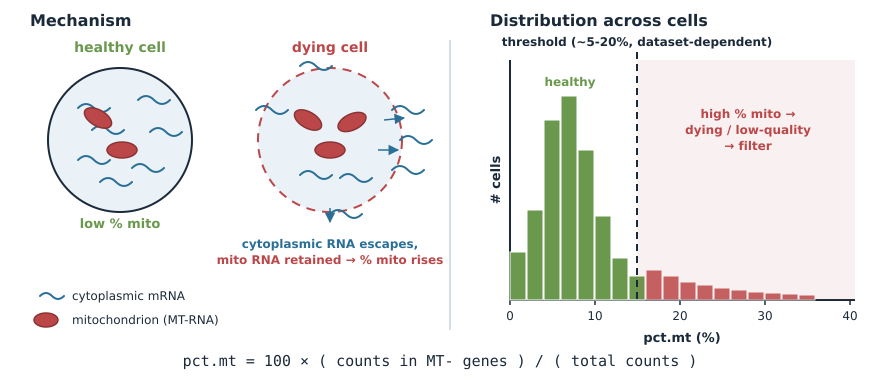
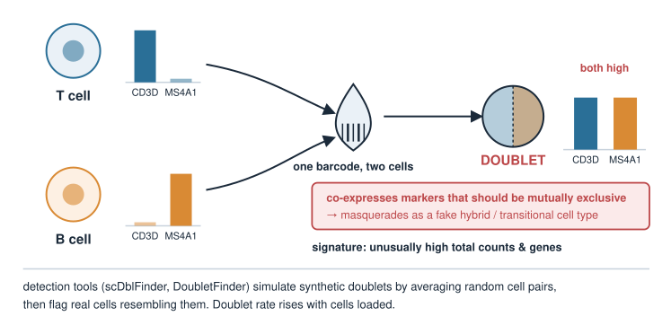

Single-cell QC in depth: doublets, mitochondrial and ribosomal reads
Candidate material — Single-cell QC in depth
Quantitative biology and integrative omics
About this lecture
Single-cell RNA-seq: data & QC filtered cells on two numbers: total counts and genes detected. Real pipelines look at more than that. This optional unit adds the other standard QC checks.
Mitochondrial fraction (percent.mt): the classic flag for dying / damaged cells.
Ribosomal fraction (percent.ribo): a covariate worth looking at, but rarely a hard filter.
Doublets: one barcode, two cells — and why they are more dangerous than random noise.
The annotation trap: a doublet is (roughly) the sum of two cell vectors, so it can look like a new “hybrid” cell type.
No new maths — fractions of counts, and the cells-as-vectors picture from Cell-type annotation.
Mitochondrial fraction
Compute the fraction of each cell’s counts coming from mitochondrial genes (in human, gene symbols starting MT-):
\text{pct.mt} = 100 \times \frac{\text{counts in MT- genes}}{\text{total counts}}
When a cell’s membrane is compromised (dying/stressed), cytoplasmic mRNA leaks out, but mitochondrial mRNA stays trapped in mitochondria.
So a high mitochondrial fraction is a hallmark of a low-quality / dying cell. Filter cells above a threshold.
The threshold is dataset-dependent (a common starting point is ~5–20%), and some healthy tissues are genuinely mito-rich — so inspect, don’t blindly apply.

Ribosomal fraction
The same recipe with ribosomal protein genes (in human, symbols starting RPS or RPL):
\text{pct.ribo} = 100 \times \frac{\text{counts in RPS/RPL genes}}{\text{total counts}}
Ribosomal protein genes are among the most highly expressed genes in almost every cell, so pct.ribo is often 10–40%.
It differs between cell types (e.g. resting lymphocytes are ribosome-rich), so it is biology as much as quality — usually inspected, rarely a hard filter.
Very low ribosomal and high mitochondrial fraction together point to a damaged cell.
A cluster whose top “markers” are only ribosomal or mitochondrial genes is usually low-quality cells, not a cell type.
The fractions in the pipeline (read, don’t run)
Seurat-style pseudocode, extending the QC step of the core pipeline:
# per-cell fractionsobj[["percent.mt"]] <-PercentageFeatureSet(obj, pattern ="^MT-")obj[["percent.ribo"]] <-PercentageFeatureSet(obj, pattern ="^RP[SL]")# look first: distributions per sampleVlnPlot(obj, features =c("nFeature_RNA", "nCount_RNA","percent.mt", "percent.ribo"))# then filter (thresholds are dataset-dependent!)obj <-subset(obj,subset = nFeature_RNA >200& nFeature_RNA <6000& percent.mt <15)
The upper limit on genes detected is a crude guard against doublets — next slides.
What is a doublet?
A doublet is one barcode that captured two cells. Its expression is a blend of two profiles.
Why it is dangerous: a doublet of a T cell and a B cell expresses both T-cell and B-cell markers — it can masquerade as a novel “hybrid” cell type or a fake transitional state.
It does not look like noise. It looks like a plausible cell expressing two programs.
The doublet rate scales with how many cells you load — more cells per run means more collisions.

Spotting a doublet: two signatures
Two cells’ worth of RNA under one barcode leaves traces in the QC metrics:
Very high total counts and genes detected — about two cells’ worth of RNA. On the counts-vs-genes QC plot, doublets sit in the extreme upper corner. Flag / filter.
Co-expression of mutually exclusive markers — e.g. the T-cell marker CD3Dand the B-cell marker MS4A1 both high in one “cell”. A single real cell almost never does this.
Neither signature is proof on its own: some real cells are large (high counts), and two cells of the same type give a doublet with no marker clash at all.
Detection tools
Dedicated tools (e.g. scDblFinder, DoubletFinder) do better than a count threshold:
Simulate artificial doublets by averaging (or summing) the profiles of random pairs of real cells.
Put the simulated doublets and the real cells in the same space (e.g. PCA).
Flag real cells whose neighbours are mostly simulated doublets.
library(scDblFinder)sce <-scDblFinder(sce) # adds a doublet score and a call per celltable(sce$scDblFinder.class) # "singlet" / "doublet"sce <- sce[, sce$scDblFinder.class =="singlet"]
Doublet detection is a separate step, usually run before or alongside the other QC filters — and before annotation.
The annotation trap: a doublet is a vector sum
In annotation, each cell is a vector of gene expression. A doublet is roughly the sum of two cell vectors: